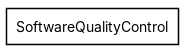
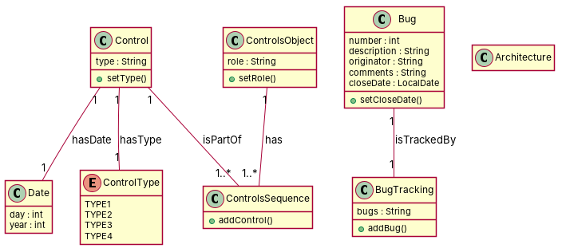

← all cases
D2/SoftwareQualityControl — model qwen, condition B, run 1
1. Requirements (input)
R1: It is a model class for describing the concept of a date. It includes an integer for the day and another integer for the year.
R2: The ControlsSequence is a class in the SoftwareQualityControl package
R3: The controls objects are linked to the controls sequence and their role (responsibility) in the sequence.
R4: The different types of controls.
R5: A software quality control has a bug traking
R6: Bug is a class in SoftwareQualityControl package. It has an attribute named "number" of type "Integer". It has also four other attributes of type String: description, originator, commentsAnswers and closeDate
R7: This fragment is composed of two classes : ControlsSequence and Control. And the controls relationship between them.
R8: In a software quality control, a control belongs to a controls sequence
R9: The date of the control.
R10: A control has a type
R11: Architecture is a class that represents a specific architecture of a potential system.
R12: The list of bugs in the software bug tracking system which are linked to control type.
R13: A Bug is associated to one and only one Bug Tracking
2. Result 1 → Result 2 (ambiguity removal)
Red, struck-through: removed by ambiguity removal; green: added.
| classes (10 → 10) |
|---|
| Architecture |
| Bug |
| BugTracking |
| Control |
| ControlType |
| ControlsObject |
| ControlsSequence |
| Date |
| SoftwareBugTrackingSystem |
| SoftwareQualityControl |
| attributes (9 → 9) |
|---|
| Bug.closedate |
| Bug.commentsanswer |
| Bug.description |
| Bug.number |
| Bug.originator |
| ControlsObject.role |
| Date.concept |
| Date.day |
| SoftwareQualityControl.bug traking |
| relations (6 → 6) |
|---|
| association: Bug -> BugTracking |
| association: Control -> ControlsSequence |
| association: Control -> SoftwareQualityControl |
| association: ControlsObject -> ControlsSequence |
| association: SoftwareBugTrackingSystem -> ControlType |
| has: Control -> Date |
Enumerations added: DateType {Day, Year}
3. Ambiguity tags
| id | req | type | cue | status | readings / explanation |
|---|
| A1 | R1 | quantifier | It | resolved | It includes one integer for the day and one integer for the year.; It includes multiple integers for the day and multiple integers for the year.
The sentence is ambiguous regarding the number of integers for day and year. |
4. Diagrams generated from the shared model
usecase diagram
class diagram
5. Code skeleton (Python; Java in code/java/)
"""Code skeleton generated from the shared model of D2/SoftwareQualityControl.
Every class and method records the requirement(s) it traces to."""
from __future__ import annotations
import dataclasses as _dc
import enum as _enum
import typing as _t
@_dc.dataclass
class Date:
"""Source: R1"""
day: _t.Optional[int] = None
year: _t.Optional[int] = None
class ControlType(_enum.Enum):
"""Source: R4"""
TYPE1 = "TYPE1"
TYPE2 = "TYPE2"
TYPE3 = "TYPE3"
TYPE4 = "TYPE4"
@_dc.dataclass
class Control:
"""Source: R8, R10"""
type: _t.Optional[str] = None
controlsSequences: _t.List["ControlsSequence"] = _dc.field(default_factory=list)
controlType: _t.Optional["ControlType"] = None
date: _t.Optional["Date"] = None
def setType(self) -> None:
"""Operation."""
raise NotImplementedError
@_dc.dataclass
class ControlsSequence:
"""Source: R2, R7, R8"""
def addControl(self) -> None:
"""Operation."""
raise NotImplementedError
@_dc.dataclass
class ControlsObject:
"""Source: R3, R7, R8"""
role: _t.Optional[str] = None
controlsSequences: _t.List["ControlsSequence"] = _dc.field(default_factory=list)
def setRole(self) -> None:
"""Operation."""
raise NotImplementedError
@_dc.dataclass
class Bug:
"""Source: R6, R12"""
number: _t.Optional[int] = None
description: _t.Optional[str] = None
originator: _t.Optional[str] = None
comments: _t.Optional[str] = None
closeDate: _t.Optional[str] = None
bugTracking: _t.Optional["BugTracking"] = None
def setCloseDate(self) -> None:
"""Operation."""
raise NotImplementedError
@_dc.dataclass
class BugTracking:
"""Source: R5, R12, R13"""
bugs: _t.Optional[str] = None
def addBug(self) -> None:
"""Operation."""
raise NotImplementedError
@_dc.dataclass
class Architecture:
"""Source: R11"""
pass
6. Validation, checks and traceability
| python_compiles | True |
|---|
| java_compiles | True |
|---|
| attribute_mismatches | 0 |
|---|
| method_mismatches | 0 |
|---|
| use_cases | 0 |
|---|
| use_cases_without_actor | 0 |
|---|
| use_cases_without_method | 0 |
|---|
| actors_without_use_case | 0 |
|---|
| relations_to_unknown_class | 0 |
|---|
| inconsistencies | 0 |
|---|
| inconsistency_rate | 0.0 |
|---|
| requirement_coverage | 1.0 |
|---|
| validator fixes | |
|---|
| assumptions for open ambiguities | [] |
|---|
7. Scores against the reference
| element | P | R | F1 | TP/FP/FN |
|---|
| classes | 0.625 | 0.714 | 0.667 | 5/3/2 |
| attributes | 0.4 | 0.2 | 0.267 | 4/6/16 |
| relations | 0.6 | 0.6 | 0.6 | 3/2/2 |
| relations_strict | 0.6 | 0.6 | 0.6 | 3/2/2 |